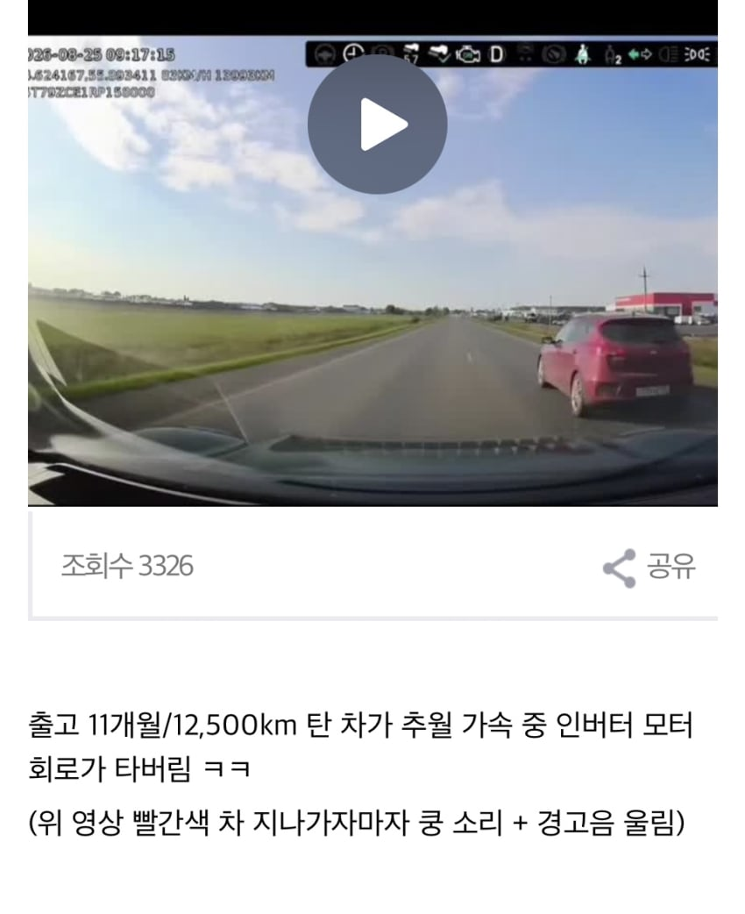
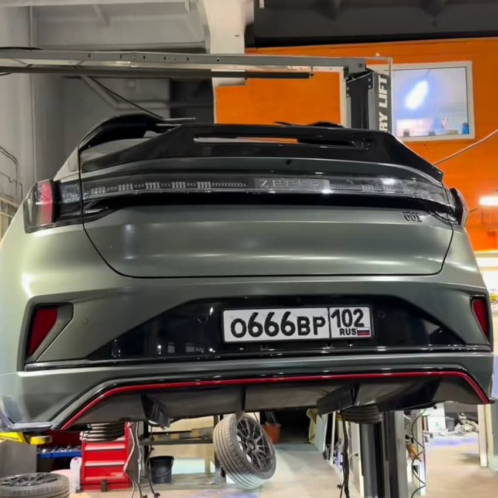
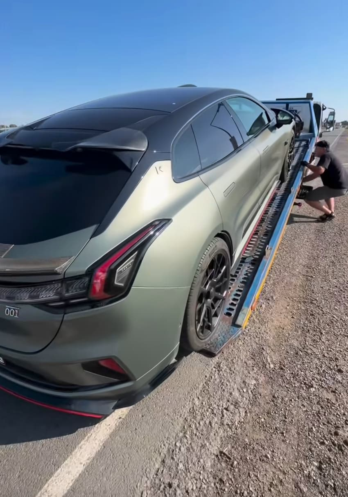
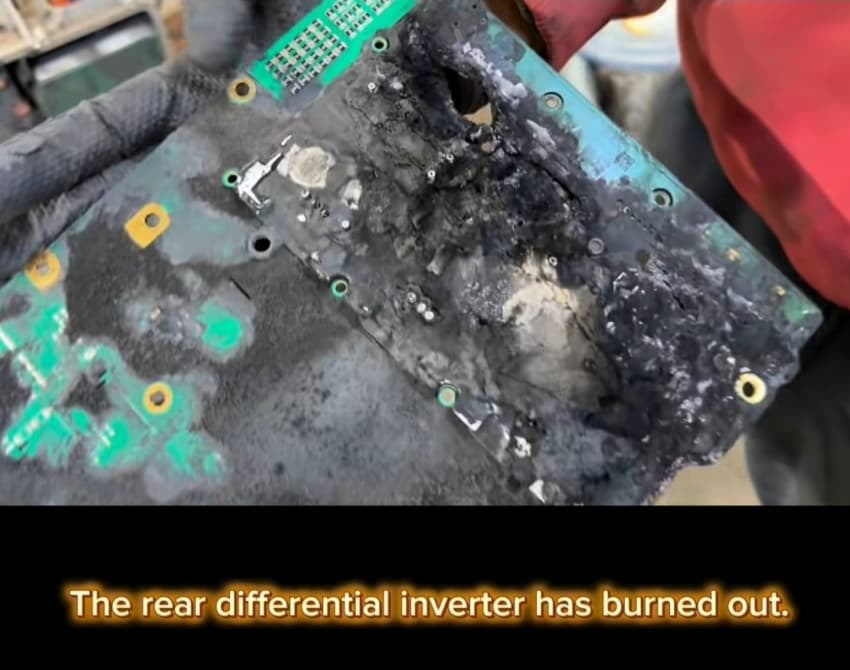
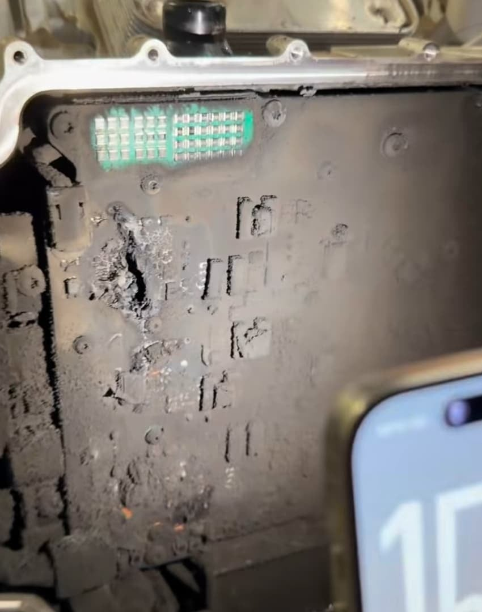
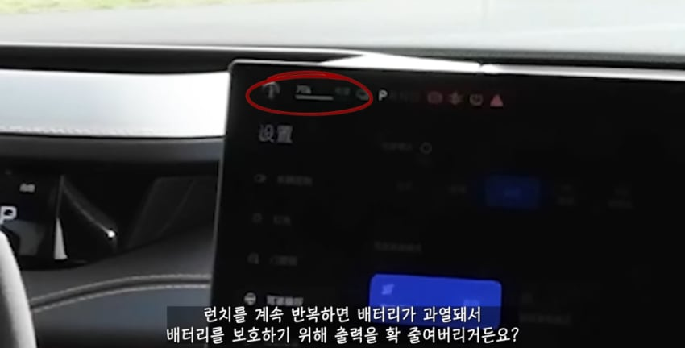
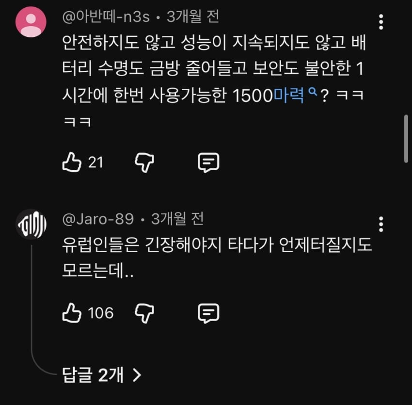
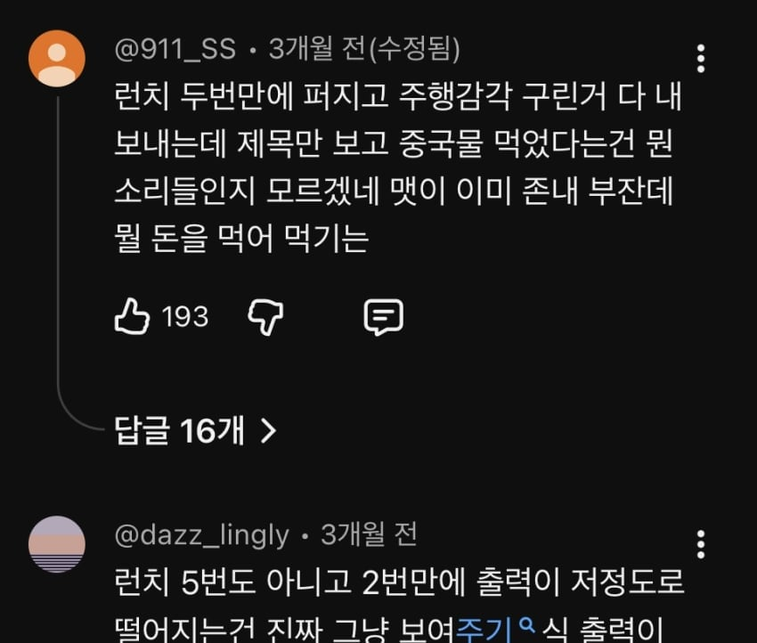
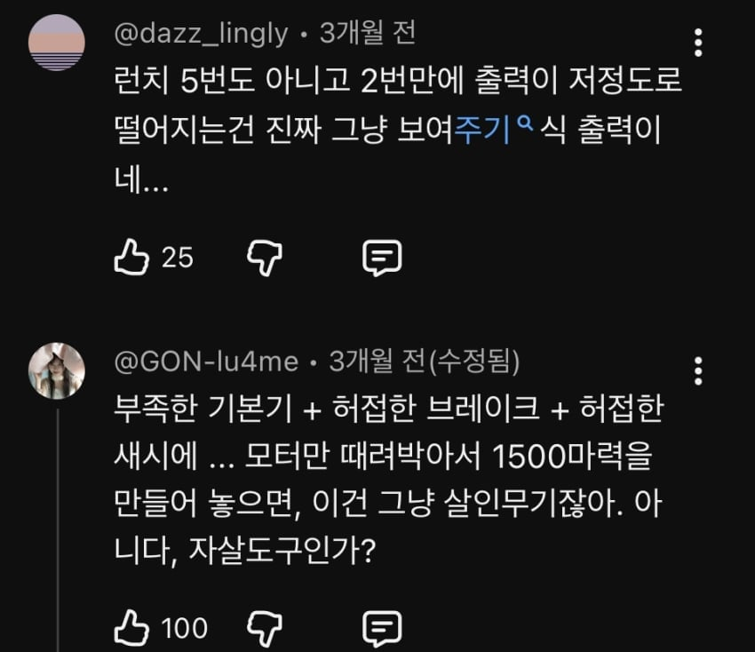

고성능 모델 보강했다고 ㅈㄴ 빨았는데도 저모양인거보면 흉기차 내구도 생각하면 안됨 잔존가치가 없는수준일듯









고성능 모델 보강했다고 ㅈㄴ 빨았는데도 저모양인거보면 흉기차 내구도 생각하면 안됨 잔존가치가 없는수준일듯
오래오래 잘타길 빌게. 내차도 슬슬 기름먹는 하마라 바꾸긴 해야하는데.
내구성문제는 원래 처음엔 몰라
현기는 좋은가 싶다. 복불복 같어. 잘은 모르니까 뭐 테슬라는 배터리 뭐시기 현대도 뭐 기판이 자꾸 문제라면서. 아직은 시기상조일까?
병신인가 왜 byd를
뭐 흉기차생각하면안됨? ㅋㅋㅋㅋㅋㅋ
현대 기아차가 좆으로보이나
RC카 장난감이랑 차랑비교하는거부터 심한욕
그럭저럭? 출퇴근거리가 70키로 넘어가니까 내연기관은 부담이 꽤 돼서